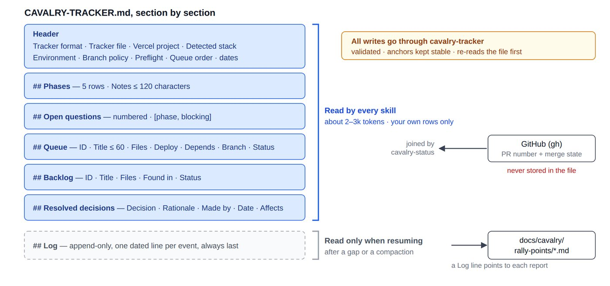

Memory and tools
Tracker and scripts
The tracker is the program's memory; five small scripts keep it honest and make restructures provable.

Field rules
| Field | Rule |
|---|---|
| Phase notes | At most 120 characters; the rest goes to the Log |
| Item title | At most 60 characters; detail in the findings doc |
| Item status | queued, in progress, done, deferred, dropped; never deleted |
| PR / merge state | Never stored: derived from GitHub by cavalry-status |
| Log | Always last, append-only, read only when resuming |
A real tracker, generated by the scripts
# Cavalry Tracker — Example Store - **Tracker format:** v2 - **Tracker file:** `CAVALRY-TRACKER.md` - **Vercel project:** not yet confirmed - **Detected stack:** frontend Next.js 14, backend Firebase (Firestore + Auth) - **Environment:** prod = vercel:example-store / firebase:example-prod; staging = vercel:example-store (preview) / firebase:example-staging - **Branch policy:** feature→staging squash; staging→main merge commit; required: test, typecheck - **Preflight:** ok - **Queue order:** Q9 Q10 Q11 - **Created:** 2026-09-26 by cavalry-tracker - **Last updated:** 2026-09-26 by cavalry-tracker ## Phases | Phase | Skill | Status | Started | Completed | Notes | |---|---|---|---|---|---| | 1 | recon | done | 2026-09-26 | 2026-09-26 | 6 modules, 2 LIVE criticals stop-gapped | | 2 | fortify | done | 2026-09-26 | 2026-09-26 | auth, billing, forms pinned; CI required | | 3 | charge | in progress | 2026-09-26 | — | Mode C, pause after Q11 | | 4 | regroup | not started | — | — | | | 5 | breach | not started | — | — | | ## Open questions 1. **[charge, blocking]** Confirm the rules deploy window for Q9 ## Queue | ID | Title | Files | Deploy | Depends | Branch | Status | |---|---|---|---|---|---|---| | Q9 | Lock public form writes to rules | firestore.rules,src/forms/submit.ts | rules-after-code | — | cavalry/q9-form-rules | done | | Q10 | Remove dead CSV exporter | src/admin/export.ts | code-only | Q9 | cavalry/q10-csv | in progress | | Q11 | Fix mailto link builder | src/email/BulkEmailModal.tsx | code-only | — | | queued | ## Backlog | ID | Title | Files | Found in | Status | |---|---|---|---|---| | B4 | Audit-log gap on role changes | src/admin/roles.ts | charge | open | ## Resolved decisions | Decision | Rationale | Made by | Date | Affects | |---|---|---|---|---| | Keep legacy /api/v1 during migration | Mobile app pinned to v1 until Q1 | human, via recon | 2026-09-26 | api/v1/** | ## Log - 2026-09-26 tracker created - 2026-09-26 phase 1 recon → done (6 modules, 2 LIVE criticals stop-gapped) - 2026-09-26 phase 2 fortify → done (auth, billing, forms pinned; CI required) - 2026-09-26 phase 3 charge → in progress (Mode C, pause after Q11) - 2026-09-26 added Q9 (rules-after-code) - 2026-09-26 added Q10 (code-only) - 2026-09-26 added Q11 (code-only) - 2026-09-26 Q9 → in progress - 2026-09-26 Q9 merged #27 - 2026-09-26 Q10 → in progress - 2026-09-26 answered question: **[fortify, non-blocking]** Is Vitest acceptable as the runner? - 2026-09-26 Q10 CI green on attempt 2 - 2026-09-26 rally point → docs/cavalry/rally-points/2026-09-26-1.md
The scripts
| Script | Does |
|---|---|
cavalry-tracker | 12 subcommands (set-phase, add-item, resolve-item, rally-point…); validates every value; prints nothing on success |
cavalry-status | Read-only report with live PR state and a Needs attention list |
cavalry-decl-diff <file> [ref] | Exit 1 if a top-level declaration vanished |
cavalry-move-codemod <manifest> [--apply] | Dry run, or git mv plus import rewrites |
cavalry-verify-pure-move [base] | Passes only for renames and import-line edits |
Real output: status, with drift flagged (PR data stubbed)
$ cavalry-status Cavalry status — Example Store (tracker: CAVALRY-TRACKER.md) Current phase: 3 charge (in progress) | Phase | Skill | Status | Started | Completed | Notes | |---|---|---|---|---|---| | 1 | recon | done | 2026-09-26 | 2026-09-26 | 6 modules, 2 LIVE criticals stop-gapped | | 2 | fortify | done | 2026-09-26 | 2026-09-26 | auth, billing, forms pinned; CI required | | 3 | charge | in progress | 2026-09-26 | — | Mode C, pause after Q11 | | 4 | regroup | not started | — | — | | | 5 | breach | not started | — | — | | Resolved decisions: 1 Open questions: 1 (1 blocking) Queue: 1/4 done (order: Q9 Q10 Q11 Q12) Q10 Remove dead CSV exporter in progress code-only cavalry/q10-csv #28 MERGED → staging Q11 Fix mailto link builder queued code-only — Q12 Split | pipe in title queued none — Backlog: 1 open Needs attention: - blocking question 1. [charge, blocking] Confirm the rules deploy window for Q9 - Q10: PR #28 is merged but tracker says "in progress" — run cavalry-tracker resolve-item Q10 28 [exit 0]
Real output: a rejected value; nothing is written
$ cavalry-tracker set-phase 3 "in progress" "Working through the queue in Mode C after the human asked to merge to staging and pause after Q11 while they are away tonight" cavalry-tracker: note is 125 chars; the cap is 120 — put the rest in the log [exit 2]
Real output: not a pure move
$ cavalry-verify-pure-move NOT a pure move against HEAD — 3 problem(s): src/extra.ts: added src/checkout.ts: -export const go = submit; src/checkout.ts: +export const go = submit * 2; Anything beyond paths and imports belongs in Charge, not Regroup. [exit 1]